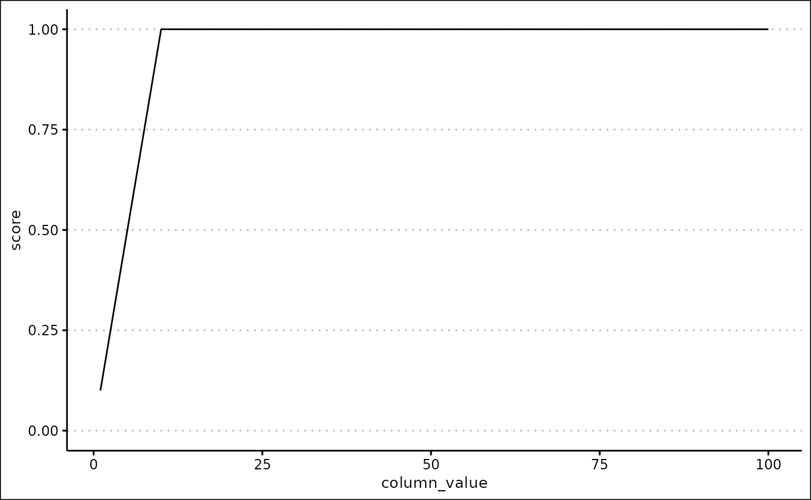
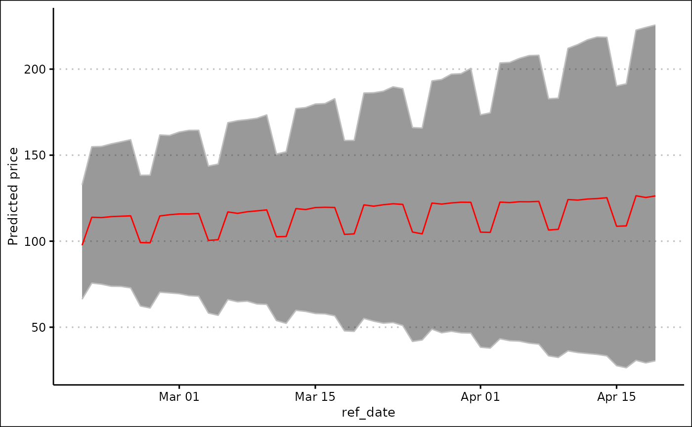
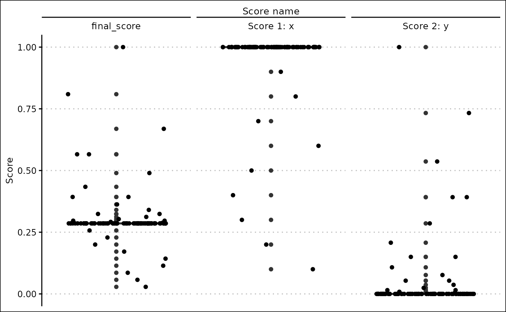
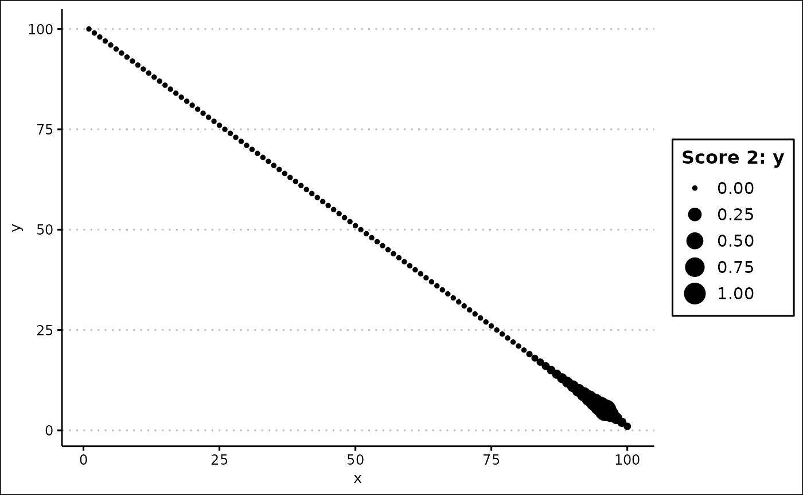
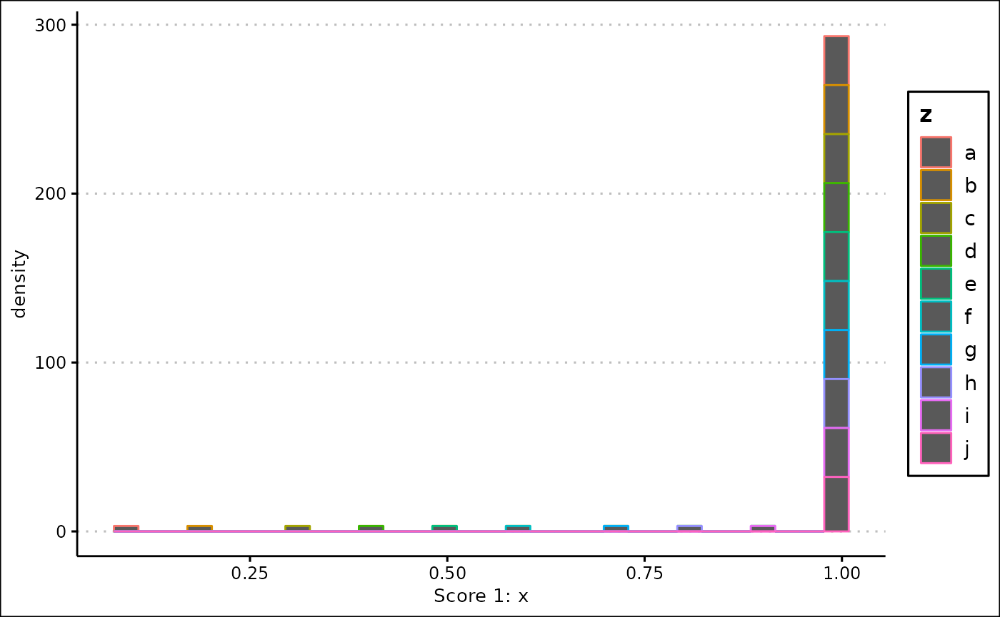

This is a demonstration of prototype 2 of the ‘financialDataAnalysis’ project.
Prototype 2 is a functionally complete project, meaning that almost all promised features are included. However, the user interface is very minimal, and involves directly calling R functions without any GUI.
The demonstration of this project also loads the following packages (although they are by no means required to have loaded for the project to work):
library(tibble)
library(vroom)
library(writexl)
library(lubridate)
library(prophet)
library(workflows)Uploading data
This project allows you to upload your own files using the
input_data() function. We’re going to create two dummy
files to demonstrate this.
data_1 <- tibble(
x = 1:10,
y = 10:1
)
file_1 <- tempfile(fileext = ".csv")
vroom_write(data_1, file_1, ",")
data_2 <- tibble(
x = 1:100,
z = letters[1:100]
)
file_2 <- tempfile(fileext = ".xlsx")
write_xlsx(data_2, file_2)The first argument of input_data() should be a character
vector of one or more file paths, to be converted into data frames. If
we give the function a bad file or a file containing bad data, it will
return the default stock data and print out a message describing the
problem.
input_data("aaaa")
#> [1] "Files were not converted correctly."
#> # A tibble: 497 × 100
#> symbol company…¹ excha…² indus…³ website descr…⁴ ceo secur…⁵ sector prima…⁶
#> <chr> <chr> <chr> <chr> <chr> <chr> <chr> <chr> <chr> <dbl>
#> 1 MMM 3M Co. NEW YO… "Offic… www.3m… "3M Co… Mich… 3M Co. Manag… 3841
#> 2 AOS A.O. Smi… NEW YO… "Heati… www.ao… "A. O.… Kevi… A.O. S… Manuf… 3630
#> 3 ABT Abbott L… NEW YO… "Pharm… www.ab… "Abbot… Robe… Abbott… Manuf… 2834
#> 4 ABBV Abbvie I… NEW YO… "Pharm… www.ab… "AbbVi… Rich… Abbvie… Manuf… 2834
#> 5 ABMD Abiomed … NASDAQ "Surgi… www.ab… "Abiom… Mich… Abiome… Manuf… 3841
#> 6 ACN Accentur… NEW YO… "Data … www.ac… "Accen… NA Accent… Infor… 7389
#> 7 ATVI Activisi… NASDAQ "Softw… www.ac… "Activ… Robe… Activi… Infor… 7372
#> 8 ADM Archer D… NEW YO… "Flour… www.ad… "ADM u… Juan… Archer… Manuf… 2041
#> 9 ADBE Adobe Inc NASDAQ "Softw… www.ad… "Adobe… Shan… Adobe … Infor… 7372
#> 10 ADP Automati… NASDAQ "Data … www.ad… "ADP i… Carl… Automa… Infor… 7374
#> # … with 487 more rows, 90 more variables: employees <dbl>, address <chr>,
#> # state <chr>, city <chr>, ZIP <chr>, country <chr>, phone <dbl>,
#> # capital_expenditures <dbl>, cash_change <dbl>, cash_flow <dbl>,
#> # cash_flow_financing <dbl>, changes_in_inventories <dbl>,
#> # changes_in_receivables <dbl>, currency <chr>, depreciation <dbl>,
#> # filing_type <chr>, fiscal_date <dbl>, net_borrowings <dbl>,
#> # net_income <dbl>, report_date <dbl>, total_investing_cash_flows <dbl>, …It is currently able to convert CSV and Excel files.
input_data(file_1)
#> # A tibble: 10 × 2
#> x y
#> <dbl> <dbl>
#> 1 1 10
#> 2 2 9
#> 3 3 8
#> 4 4 7
#> 5 5 6
#> 6 6 5
#> 7 7 4
#> 8 8 3
#> 9 9 2
#> 10 10 1
input_data(file_2)
#> # A tibble: 100 × 2
#> x z
#> <dbl> <chr>
#> 1 1 a
#> 2 2 b
#> 3 3 c
#> 4 4 d
#> 5 5 e
#> 6 6 f
#> 7 7 g
#> 8 8 h
#> 9 9 i
#> 10 10 j
#> # … with 90 more rowsIf more than one files are given, the data frames are combined together. This is done in a way such that all data is preserved and the function never errors.
input_data(c(file_1, file_2))
#> # A tibble: 100 × 3
#> x y z
#> <dbl> <dbl> <chr>
#> 1 1 10 a
#> 2 2 9 b
#> 3 3 8 c
#> 4 4 7 d
#> 5 5 6 e
#> 6 6 5 f
#> 7 7 4 g
#> 8 8 3 h
#> 9 9 2 i
#> 10 10 1 j
#> # … with 90 more rowsThe function also has a combine argument, which allows
you to combine your data with the default stock data. This is useful if
you want to add more rows or columns to the data.
input_data(file_1, combine = TRUE)
#> # A tibble: 507 × 102
#> x y symbol company_name excha…¹ indus…² website descr…³ ceo secur…⁴
#> <dbl> <dbl> <chr> <chr> <chr> <chr> <chr> <chr> <chr> <chr>
#> 1 1 10 NA NA NA NA NA NA NA NA
#> 2 2 9 NA NA NA NA NA NA NA NA
#> 3 3 8 NA NA NA NA NA NA NA NA
#> 4 4 7 NA NA NA NA NA NA NA NA
#> 5 5 6 NA NA NA NA NA NA NA NA
#> 6 6 5 NA NA NA NA NA NA NA NA
#> 7 7 4 NA NA NA NA NA NA NA NA
#> 8 8 3 NA NA NA NA NA NA NA NA
#> 9 9 2 NA NA NA NA NA NA NA NA
#> 10 10 1 NA NA NA NA NA NA NA NA
#> # … with 497 more rows, 92 more variables: sector <chr>,
#> # primary_sic_code <dbl>, employees <dbl>, address <chr>, state <chr>,
#> # city <chr>, ZIP <chr>, country <chr>, phone <dbl>,
#> # capital_expenditures <dbl>, cash_change <dbl>, cash_flow <dbl>,
#> # cash_flow_financing <dbl>, changes_in_inventories <dbl>,
#> # changes_in_receivables <dbl>, currency <chr>, depreciation <dbl>,
#> # filing_type <chr>, fiscal_date <dbl>, net_borrowings <dbl>, …
input_data(c(file_1, file_2), combine = TRUE)
#> # A tibble: 597 × 103
#> x y z symbol company_name exchange industry website descr…¹ ceo
#> <dbl> <dbl> <chr> <chr> <chr> <chr> <chr> <chr> <chr> <chr>
#> 1 1 10 a NA NA NA NA NA NA NA
#> 2 2 9 b NA NA NA NA NA NA NA
#> 3 3 8 c NA NA NA NA NA NA NA
#> 4 4 7 d NA NA NA NA NA NA NA
#> 5 5 6 e NA NA NA NA NA NA NA
#> 6 6 5 f NA NA NA NA NA NA NA
#> 7 7 4 g NA NA NA NA NA NA NA
#> 8 8 3 h NA NA NA NA NA NA NA
#> 9 9 2 i NA NA NA NA NA NA NA
#> 10 10 1 j NA NA NA NA NA NA NA
#> # … with 587 more rows, 93 more variables: security_name <chr>, sector <chr>,
#> # primary_sic_code <dbl>, employees <dbl>, address <chr>, state <chr>,
#> # city <chr>, ZIP <chr>, country <chr>, phone <dbl>,
#> # capital_expenditures <dbl>, cash_change <dbl>, cash_flow <dbl>,
#> # cash_flow_financing <dbl>, changes_in_inventories <dbl>,
#> # changes_in_receivables <dbl>, currency <chr>, depreciation <dbl>,
#> # filing_type <chr>, fiscal_date <dbl>, net_borrowings <dbl>, …Scoring data
Once you have imported your data into R, you now need to score it. You do this by creating score specifications, which are definitions of how a score should be created.
These score specifications are stored in a table, where each row represents a single score.
The scores_init object is a table storing zero
scores.
scores_init
#> # A tibble: 0 × 12
#> # … with 12 variables: score_type <chr>, colname <chr>, score_name <chr>,
#> # weight <dbl>, lb <dbl>, ub <dbl>, centre <dbl>, inverse <lgl>,
#> # exponential <lgl>, logarithmic <lgl>, magnitude <dbl>, custom_args <list>This table has a number of fields that control how each score will be created:
Each score will always be between 0 and 1.
The score_type argument is arguably the most important,
as it defines the method used to create a score. Each score type has a
number of specific arguments.
Universal arguments
These arguments have to be defined for every score.
The colname argument defines the column that the score
will be creating using.
The score_name argument defines the name of the score,
which will be used as a column name when the score is added back to the
original data frame. If score_name is “Default”, an
informative and sensible default name will be used.
The weight argument defines the weight of the score when
it is used to calculate the final score.
Exponential arguments
The exponential argument is required for all scores. If
it is FALSE, the score is not modified after it has been
created. If it is TRUE, an exponential transformation is
applied to the score, and you will need to specify two additional
arguments. The score will continue to be bounded by 0 and 1.
The logarithmic argument defines whether the
transformation is exponential or logarithmic. If it TRUE,
the transformation is inverted.
The magnitude argument defines the magnitude of the
transformation: a higher number means that the transformation will have
a bigger effect.

Linear scores
When the score_name is “Linear”, a linear score is
created. To make the score you need to specify the lb and
ub arguments.
Calculating the score
If the column value is less than or equal to the lb
argument, the score is 0. If the column value is more than or equal to
the ub argument, the score is 1.
Otherwise, the score is defined is the proportion of the distance of
the column value between the lb and ub.
If the lb argument is more than the ub
argument, the score is inverted. This means that the lb
produces a score of 1, the ub produces a score of 0,
etc.
Peak scores
When the score_name is “Peak”, a peak score is created.
To make the score you need to specify the lb,
ub, centre and inverse arguments.
The lb, ub and centre arguments
must be numeric, and the centre must be between the
lb and ub.
Calculating the score
If the column value is less than or equal to the lb
argument, the score is 0. If the column value is equal to the
centre argument, the score is 1. If the column value is
more than or equal to the ub argument, the score is 1.
If the column value is in between the lb and
centre arguments, the score is defined as the proportion of
the column value along between the lb and
centre. If the column value is in between the
centre and ub arguments, the score is defined
as the proportion of the column value along between the ub
and centre.
When inverse is TRUE, the score is
inverted: the lower bound and upper bound produce a score of 1, and the
centre produces a score of 0.
Custom scores
When score_type is “Custom coordinates”, a custom score
is created. This allows you to define a set of coordinates, where the x
coordinate is a value in the column, and the y coordinate is a score
between 0 and 1. The score will then be created by connecting the
coordinates together. The coordinates should be in the form of a data
frame, with the x coordinates in the ‘x’ column and the y coordinates in
the ‘y’ column.
This can be used to create a huge variety of different scores.
To add a score to a table, use the create_score()
function. Lets create a linear and a peak score.
scores <- create_score(
scores_init,
score_type = "Linear", colname = "x", score_name = "Default",
weight = 1, lb = 0, ub = 10, exponential = FALSE
)
scores <- create_score(
scores,
score_type = "Peak", colname = "y", score_name = "Default",
weight = 5, lb = 0, ub = 20, centre = 5, inverse = FALSE, exponential = TRUE,
logarithmic = FALSE, magnitude = 2
)
scores
#> # A tibble: 2 × 12
#> score_type colname score_n…¹ weight lb ub centre inverse expon…² logar…³
#> <chr> <chr> <glue> <dbl> <dbl> <dbl> <dbl> <lgl> <lgl> <lgl>
#> 1 Linear x Score 1:… 1 0 10 NA NA FALSE NA
#> 2 Peak y Score 2:… 5 0 20 5 FALSE TRUE FALSE
#> # … with 2 more variables: magnitude <dbl>, custom_args <list>, and abbreviated
#> # variable names ¹score_name, ²exponential, ³logarithmicThe create_score() function also allows you to edit a
score, using the editing argument. Here, we will edit the
linear score to change the weight. Note that the arguments you give must
always be valid for the score to be added or edited.
scores <- create_score(
scores,
editing = 1, score_type = "Linear", colname = "x",
score_name = "Default", weight = 2, lb = 0, ub = 10, exponential = FALSE
)
scores
#> # A tibble: 2 × 12
#> score_type colname score_n…¹ weight lb ub centre inverse expon…² logar…³
#> <chr> <chr> <glue> <dbl> <dbl> <dbl> <dbl> <lgl> <lgl> <lgl>
#> 1 Linear x Score 1:… 2 0 10 NA NA FALSE NA
#> 2 Peak y Score 2:… 5 0 20 5 FALSE TRUE FALSE
#> # … with 2 more variables: magnitude <dbl>, custom_args <list>, and abbreviated
#> # variable names ¹score_name, ²exponential, ³logarithmicScores can be deleted with the delete_scores() function.
Enter a vector containing multiple numbers to delete multiple
scores.
delete_scores(scores, 2)
#> # A tibble: 1 × 12
#> score_type colname score_n…¹ weight lb ub centre inverse expon…² logar…³
#> <chr> <chr> <glue> <dbl> <dbl> <dbl> <dbl> <lgl> <lgl> <lgl>
#> 1 Linear x Score 1:… 2 0 10 NA NA FALSE NA
#> # … with 2 more variables: magnitude <dbl>, custom_args <list>, and abbreviated
#> # variable names ¹score_name, ²exponential, ³logarithmic
delete_scores(scores, c(1, 2))
#> # A tibble: 0 × 12
#> # … with 12 variables: score_type <chr>, colname <chr>, score_name <glue>,
#> # weight <dbl>, lb <dbl>, ub <dbl>, centre <dbl>, inverse <lgl>,
#> # exponential <lgl>, logarithmic <lgl>, magnitude <dbl>, custom_args <list>You can observe how a score will be created using the
score_summary() function. This is useful to check that the
score you are going to create is what you expect.
column <- 1:100
score_summary(column, score_type = "Linear", lb = 0, ub = 10, exponential = FALSE)
Applying score specifications
Create the actual scores, and add them to your data, with the
apply_scores() function.
data <- tibble(
x = 1:100,
y = 100:1,
z = letters[rep(1:10, 10)]
)
scored_data <- apply_scores(data, scores)
scored_data
#> # A tibble: 100 × 5
#> x y z `Score 1: x` `Score 2: y`
#> <int> <int> <chr> <dbl> <dbl>
#> 1 1 100 a 0.1 0
#> 2 2 99 b 0.2 0
#> 3 3 98 c 0.3 0
#> 4 4 97 d 0.4 0
#> 5 5 96 e 0.5 0
#> 6 6 95 f 0.6 0
#> 7 7 94 g 0.7 0
#> 8 8 93 h 0.8 0
#> 9 9 92 i 0.9 0
#> 10 10 91 j 1 0
#> # … with 90 more rowsFinally, you can create a final score with the
score_final() function. This calculates a weighted mean of
all the scores you have created.
final_data <- score_final(scored_data, scores)
final_data
#> # A tibble: 100 × 6
#> x y z `Score 1: x` `Score 2: y` final_score
#> <int> <int> <chr> <dbl> <dbl> <dbl>
#> 1 1 100 a 0.1 0 0.0286
#> 2 2 99 b 0.2 0 0.0571
#> 3 3 98 c 0.3 0 0.0857
#> 4 4 97 d 0.4 0 0.114
#> 5 5 96 e 0.5 0 0.143
#> 6 6 95 f 0.6 0 0.171
#> 7 7 94 g 0.7 0 0.2
#> 8 8 93 h 0.8 0 0.229
#> 9 9 92 i 0.9 0 0.257
#> 10 10 91 j 1 0 0.286
#> # … with 90 more rowsFiltering data
Once you have scored your data, it is useful to be able to filter and
sort it. Filters are stored in a table in the same way as scores are.
Use the filters_init object to get a table with 0 filters
in.
filters_init
#> # A tibble: 0 × 5
#> # … with 5 variables: type <chr>, colname <chr>, pattern <chr>, min <dbl>,
#> # max <dbl>Create a filter with the add_filter() function. All you
need to specify initially is the column you want to filter.
filters <- add_filter(filters_init, "Score 1: x", final_data)
filters <- add_filter(filters, "z", final_data)
filters
#> # A tibble: 2 × 5
#> type colname pattern min max
#> <chr> <chr> <chr> <dbl> <dbl>
#> 1 numeric Score 1: x NA 0.1 1
#> 2 character z "" NA NAThere are two types of filters: numeric and character filters.
Numeric filters filter numeric columns using a minimum and maximum value. Only rows where the value of the specified column is between the minimum and maximum are included in the filtered data frame.
String filters filter string (word) columns using a pattern. Only rows where the value of the specified column contains the pattern are included in the filtered data frame.
You can edit created filters with the edit_filter()
function.
filters <- edit_filter(filters, 1, min = 0.5, max = 1)
filters <- edit_filter(filters, 2, pattern = "a")
filters
#> # A tibble: 2 × 5
#> type colname pattern min max
#> <chr> <chr> <chr> <dbl> <dbl>
#> 1 numeric Score 1: x NA 0.5 1
#> 2 character z a NA NAYou can then apply these filters with the
apply_filters() function.
filtered_data <- apply_filters(final_data, filters[2, ])
filtered_data
#> # A tibble: 10 × 6
#> x y z `Score 1: x` `Score 2: y` final_score
#> <int> <int> <chr> <dbl> <dbl> <dbl>
#> 1 1 100 a 0.1 0 0.0286
#> 2 11 90 a 1 0 0.286
#> 3 21 80 a 1 0 0.286
#> 4 31 70 a 1 0 0.286
#> 5 41 60 a 1 0 0.286
#> 6 51 50 a 1 0 0.286
#> 7 61 40 a 1 0 0.286
#> 8 71 30 a 1 0 0.286
#> 9 81 20 a 1 0 0.286
#> 10 91 10 a 1 0.208 0.434Sorting data
Data can be sorted with the sort_df() function. The
desc argument controls whether the column is sorted in
ascending or descending order.
sort_df(filtered_data, "y", desc = FALSE)
#> # A tibble: 10 × 6
#> x y z `Score 1: x` `Score 2: y` final_score
#> <int> <int> <chr> <dbl> <dbl> <dbl>
#> 1 91 10 a 1 0.208 0.434
#> 2 81 20 a 1 0 0.286
#> 3 71 30 a 1 0 0.286
#> 4 61 40 a 1 0 0.286
#> 5 51 50 a 1 0 0.286
#> 6 41 60 a 1 0 0.286
#> 7 31 70 a 1 0 0.286
#> 8 21 80 a 1 0 0.286
#> 9 11 90 a 1 0 0.286
#> 10 1 100 a 0.1 0 0.0286Downloading data
Use the download_df() function to write your data frame
to a file. The file_type argument currently only accepts
“CSV” and “Excel”.
download_df(filtered_data, "CSV", "myfile.csv")Predicting prices
A major part of this app is the ability to predict the price of a
specified stock. First, certain stocks can be ‘favourited’ using the
favourite_stock() function.
stock_data <- favourite_stock(default_stock_data, "GOOGL")Stock data can be searched using the search_stock()
function. The results will show the favourited stocks at the top.
search_stocks(stock_data, "go")
#> # A tibble: 4 × 100
#> symbol company_…¹ excha…² indus…³ website descr…⁴ ceo secur…⁵ sector prima…⁶
#> <chr> <chr> <chr> <chr> <chr> <chr> <chr> <chr> <chr> <dbl>
#> 1 GOOGL Alphabet … NASDAQ "All O… abc.xyz Larry … Sund… Alphab… Infor… 7375
#> 2 AVGO Broadcom … NASDAQ "Semic… www.br… Broadc… Hock… Broadc… Manuf… 3674
#> 3 GS Goldman S… NEW YO… "Inves… www.gs… The Go… Davi… Goldma… Finan… 6211
#> 4 WFC Wells Far… NEW YO… "Comme… www.we… Wells … Char… Wells … Finan… 6021
#> # … with 90 more variables: employees <dbl>, address <chr>, state <chr>,
#> # city <chr>, ZIP <chr>, country <chr>, phone <dbl>,
#> # capital_expenditures <dbl>, cash_change <dbl>, cash_flow <dbl>,
#> # cash_flow_financing <dbl>, changes_in_inventories <dbl>,
#> # changes_in_receivables <dbl>, currency <chr>, depreciation <dbl>,
#> # filing_type <chr>, fiscal_date <dbl>, net_borrowings <dbl>,
#> # net_income <dbl>, report_date <dbl>, total_investing_cash_flows <dbl>, …Once you have found a stock you want to make predictions on, you can
generate a summary of it using the stock_summary()
function.
stock <- which(stock_data$symbol == "GOOGL")
stock_summary(stock_data, stock)
#> # A tibble: 1 × 100
#> symbol company_…¹ excha…² indus…³ website descr…⁴ ceo secur…⁵ sector prima…⁶
#> <chr> <chr> <chr> <chr> <chr> <chr> <chr> <chr> <chr> <dbl>
#> 1 GOOGL Alphabet … NASDAQ "All O… abc.xyz Larry … Sund… Alphab… Infor… 7375
#> # … with 90 more variables: employees <dbl>, address <chr>, state <chr>,
#> # city <chr>, ZIP <chr>, country <chr>, phone <dbl>,
#> # capital_expenditures <dbl>, cash_change <dbl>, cash_flow <dbl>,
#> # cash_flow_financing <dbl>, changes_in_inventories <dbl>,
#> # changes_in_receivables <dbl>, currency <chr>, depreciation <dbl>,
#> # filing_type <chr>, fiscal_date <dbl>, net_borrowings <dbl>,
#> # net_income <dbl>, report_date <dbl>, total_investing_cash_flows <dbl>, …Finally, predictions can be made using the
predict_price() function. Specify a stock, a start date and
an end date to start making predictions. The function can make daily or
monthly predictions, specify this using the freq
argument.
predictions_daily <- predict_price(
"GOOGL",
start_date = today(),
end_date = today() %m+% months(2), freq = "daily"
)
predictions_monthly <- predict_price(
"GOOGL",
start_date = today(),
end_date = today() + years(1), freq = "monthly"
)
#> Joining, by = "ref_date"
#> Warning in preds$yhat + residuals: longer object length is not a multiple of
#> shorter object length
predictions_daily
#> # A tibble: 63 × 4
#> yhat yhat_lower yhat_upper ref_date
#> <dbl> <dbl> <dbl> <date>
#> 1 98.9 96.6 104. 2022-12-15
#> 2 100. 96.6 104. 2022-12-16
#> 3 87.5 83.2 90.5 2022-12-17
#> 4 86.5 83.4 91.1 2022-12-18
#> 5 100. 97.2 105. 2022-12-19
#> 6 102. 96.8 105. 2022-12-20
#> 7 101. 97.3 106. 2022-12-21
#> 8 101. 97.1 106. 2022-12-22
#> 9 101. 97.2 107. 2022-12-23
#> 10 88.5 83.4 93.0 2022-12-24
#> # … with 53 more rows
predictions_monthly
#> # A tibble: 13 × 4
#> yhat yhat_lower yhat_upper ref_date
#> <dbl> <dbl> <dbl> <date>
#> 1 92.8 92.8 92.8 2022-12-15
#> 2 108. 109. 137. 2023-01-15
#> 3 137. 131. 160. 2023-02-15
#> 4 135. 131. 159. 2023-03-15
#> 5 133. 122. 150. 2023-04-15
#> 6 116. 106. 133. 2023-05-15
#> 7 139. 126. 155. 2023-06-15
#> 8 149. 132. 160. 2023-07-15
#> 9 132. 121. 149. 2023-08-15
#> 10 126. 118. 145. 2023-09-15
#> 11 161. 156. 183. 2023-10-15
#> 12 131. 124. 152. 2023-11-15
#> 13 123. 123. 151. 2023-12-15Make a graph of these predictions using the
plot_predictions() function.
plot_predictions(predictions_daily)
Plotting data
The project currently provides two ‘default’ plots, and a framework for you to create your own custom plots.
Score distribution
The score distribution plot creates a box plot with a jitter overlay to show the distribution of each of your scores.
To get your scores to plot, use the get_scores()
function.
actual_scores <- get_scores(final_data, scores)
actual_scores
#> # A tibble: 100 × 3
#> `Score 1: x` `Score 2: y` final_score
#> <dbl> <dbl> <dbl>
#> 1 0.1 0 0.0286
#> 2 0.2 0 0.0571
#> 3 0.3 0 0.0857
#> 4 0.4 0 0.114
#> 5 0.5 0 0.143
#> 6 0.6 0 0.171
#> 7 0.7 0 0.2
#> 8 0.8 0 0.229
#> 9 0.9 0 0.257
#> 10 1 0 0.286
#> # … with 90 more rowsThis is the only argument to the score_distributions()
function.
score_distributions(actual_scores)
Here we can see that most of the column values produced a single score, so we may want to change our score specifications to be more specific.
Score performance
The score performance graph allows you to plot a column of your
choice against every one of your scores. To create this graph, use the
score_performance() function.
score_performance(final_data, "y", actual_scores)Custom plots
The custom_plot() function allows you to create a vast
number of plots from your data. The first argument to the function is
the data, followed by the plotting method. The rest of the arguments
depend on the plotting method. Each argument should be specified in the
format aesthetic = "column_name", where
aesthetic is a visual property that a variable can be
mapped to (e.g. x, colour), and column_name is the name of
a column in your data.
Currently, three different types of graphs can be created: line graphs, scatter graphs and histograms.
Line graphs
Create line graphs passing in “line” to the
plotting_method argument.
Line graphs accept the following aesthetics:
-
x- the variable on the x axis. -
y- the variable on the y axis. -
colour- the colour of the line.
x and y are required arguments, meaning
that they must be supplied for a plot to be outputted.
custom_plot(final_data, "line", x = "x", y = "final_score", colour = "y")
Scatter graphs
Create scatter graphs passing in “scatter” to the
plotting_method argument.
Scatter graphs accept the following aesthetics:
-
x- the variable on the x axis. -
y- the variable on the y axis. -
colour- the colour of the point. -
size- the size of the point. -
shape- the shape of the point.
x and y are required arguments, meaning
that they must be supplied for a plot to be outputted.
custom_plot(final_data, "scatter", x = "x", y = "y", size = "Score 2: y")
Histograms
Create histograms passing in “histogram” to the
plotting_method argument.
Histograms accept the following aesthetics:
-
x- the variable on the x axis. -
colour- the colour of the bar. -
size- the size of the bar.
x is a required arguments, meaning that it must be
supplied for a plot to be outputted.
The y aesthetic of a histogram is the frequency density of the x coordinate.
custom_plot(final_data, "histogram", x = "Score 1: x", colour = "z")
#> `stat_bin()` using `bins = 30`. Pick better value with `binwidth`.